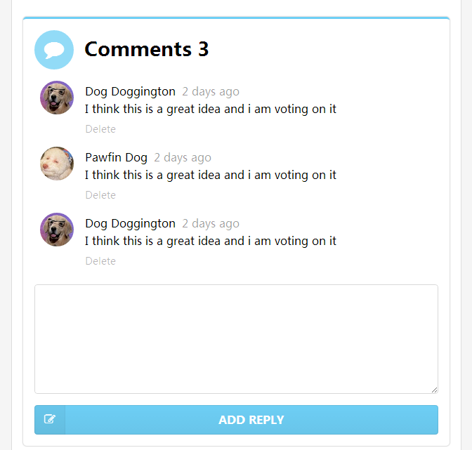

在 sementic-ui 中有好看的评论样式，于是我们从中借鉴，进行简单的改造。
先看一下最终的实现效果

上面有评论的总条数，每条评论有：头像，作者，发表时间和内容。然后下面还有一个删 除的文本。最下面是发表回复的文本框，以及提交的按钮。
评论的数据，也将从 json 文件中获取。
[{"id":1,"author":"Dog Doggington","date":"2 days ago","content":"I think this is a great idea and i am voting on it","avatar":"./avatar.jpg"},{"id":2,"author":"Pawfin Dog","date":"2 days ago","content":"I think this is a great idea and i am voting on it","avatar":"./avatar2.jpg"},{"id":3,"author":"Dog Doggington","date":"2 days ago","content":"I think this is a great idea and i am voting on it","avatar":"./avatar.jpg"}]可以看到一条评论是由：
id 当前评论的数据库 ID, 可以用来进行删除author 作者date 发表日期content 评论内容avatar 头像地址这些元素组成。
直接拿到 sementic-ui 的代码还不太符合我的要求，于是对它进行了必要的减化，最终 代码如下：
...
<!-- comments -->
<div class="ui piled blue segment" ms-controller="comments">
<h2 class="ui header">
<i class="icon inverted circular blue comment"></i> Comments {{comments.size()}}
</h2>
<div class="ui comments">
<div class="comment" ms-repeat="comments">
<a class="avatar">
<img ms-src="el.avatar">
</a>
<div class="content">
<a class="author">{{el.author}}</a>
<div class="metadata">
<span class="date">{{el.date}}</span>
</div>
<div class="text">
{{el.content|html}}
</div>
<div class="actions">
<a class="delete">Delete</a>
</div>
</div>
</div>
<form class="ui reply form">
<div class="field">
<textarea></textarea>
</div>
<div class="ui fluid blue labeled submit icon button">
<i class="icon edit"></i> Add Reply
</div>
</form>
</div>
</div>
...这里只有几点要提示：
ms-controller="comments" ，在一个HTML页面中可以有多个 controllerms-repeat=comments 来进行数据循环，详细说明在下面{{comments.size()}} ，这里不使用 comments.length 是因为当数组长度 变化时，只有 size() 会引起页面重新进行渲染。el 是 ms-repeat 自动生成的循环变量ms-src 因为头像的图片地址是要使用变量，所以要将 src 属性改为 ms-src这里只对 ms-repeat 作简单介绍，详细内容请参见下面的参考文档。
ms-repeat 类似于对一个数组进行循环，它放在将要重复生成的元素上，本例中就是 每条评论。这样，当前元素会根据数组的个数重复生成，包括其中的子元素。在循环时会 自动生成一些临时变量，用于DOM模板的处理，如：
el 这个表示循环变量，即当前正在处理的变量$first 如果是第一个元素，则为 true$last 如果是最后一个元素，则为 true$index 当前元素的索引值还有其它的一些临时变量，这里不详细描述。我们常用的就是 el 这个对象。
因此在下面，我们看到： el.avatar, {{el.author}}, {{el.date}}, {{el.content|html}} 就不难理解了。它们都是通过当前元素来引用相应的具体的属性。
前面已经说过，因为使用了 el.avatar 这个变量，所以属性要使用 ms-src 。
下面是完整的 js 代码，包括 Blog 的基本信息展示：
...
<script>
var model = avalon.define("blog", function(vm){
vm.blog = {};
});
var comments = avalon.define("comments", function(vm){
vm.comments = [];
});
$(function(){
$.getJSON('blog_info.json').done(function(data){
model.blog = data;
});
$.getJSON('comments.json').done(function(data){
comments.comments = data;
});
});
</script>
...看到了吗？就这么简单。比原来的内容，増加了：
$.getJSON() 获得评论数据的处理。这块就是一个简单的赋值，也没什么 多说的。对于评论总条数，我们没有特殊处理，只是使用了 {{comments.size()}} ，这样只要 评论条数变化，界面自动变化。真是省了大量的工作。
在 Avalon 中，是先有 ms-each 后来才出现的 ms-repeat 。它们两个使用不太一样：
ms-repeat 是定义在要循环的元素上，因此，不会影响其它同级和父元素。ms-each 是定义在父元素上，但是复制的是它下面的所有子元素。因此，如果你需要 在循环时，有些子元素不参与复制就没办法了。所以目前， ms-repeat 是更方便的用法。